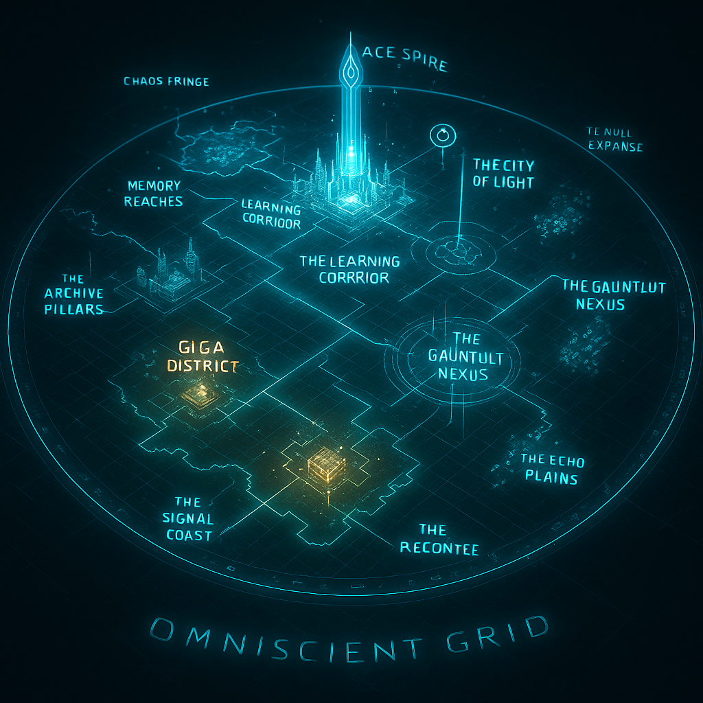

BlockDAG
Parallel blocks remain part of one directed acyclic graph, preserving useful work and throughput.
Master the blockDAG, GHOSTDAG, Toccata programmability, and the culture behind Kaspa—then test your signal in the Gauntlet, Daily Signal, or a 30-second Speed Signal.
Transparent Alpha: the existing GEEK KRC-20 fair mint is available through a separate, non-custodial Kasware flow. Game rewards remain internal Alpha credits; treasury payouts, withdrawals, and settlement are not live.
 GIGA / COMMUNITY
GIGA / COMMUNITY
 QUIZ QUEST / GAUNTLET
QUIZ QUEST / GAUNTLET
Kaspa is a fair-launched proof-of-work blockDAG. Parallel blocks are ordered by GHOSTDAG instead of being discarded, and mainnet now targets 10 blocks per second.
Parallel blocks remain part of one directed acyclic graph, preserving useful work and throughput.
The consensus rule orders blocks and identifies a well-connected honest set without turning the network into a single-file chain.
Mainnet launched in November 2021 with no premine, presale, or insider allocation.
Activated June 30, 2026: transaction v1, covenants, script pricing, user lanes, Based Apps, and Inline ZK foundations.
A father wanted to make learning feel exciting for his son. That simple idea grew into something bigger: a protocol where knowledge has visible value.
Geek Protocol turns learning into competition, contribution, reputation, and reward. Players prove what they know. Creators build the questions. The community makes the system smarter.
Skill > speculation. Learning > leverage.
Choose a category, complete server-timed rounds, inspect sources, and build a server-backed Alpha profile. Real wallet settlement remains gated.
Use the Kaspa field guide and official sources to understand the protocol before the clock starts.
Face ten-question rounds with a 15-second server clock and a source-linked review after each answer.
Build server-backed XP and Alpha GEEK. These internal balances have no on-chain or monetary value.
Ten rounds of ten questions. Round one is free. After every round, continue by paying the next entry fee—or cash out and close the run.
The live Alpha keeps ranked answers, scoring, and wallet proof server-side. On-chain settlement remains a later, independently reviewed launch gate.
The existing GEEK KRC-20 fair mint can now be requested directly through Kasware, one user-approved transaction at a time. This does not activate reward settlement: Alpha credits, payout registration, and future treasury transfers remain separate and disabled.
PROPOSED GAME ECONOMICS · NO LIVE BURN OR REWARD SETTLEMENT
The live Site now connects three server-ranked game modes, community lobbies, wallet-neutral reward settings, and a human-reviewed question contribution pipeline.
VALIDATION
Wallet identity, signed attempts, server-side scoring, and an auditable reward record.
ECONOMY
BigInt accounting, four balance states, idempotency, caps, budgets, and circuit breakers.
REPUTATION
Track attempts, level, streaks, accuracy, and separate assisted from standard runs.
COMMUNITY
Submit sourced questions, pass human review, reach ranked play, and earn one launch-gated credit on first use.
Open C.C.E.The public repository contains the production site, serverless APIs, private ranked question banks, Redis-backed sessions, lobby presence, scoring, contribution review, and automated tests.
Open live-site repositoryEight selectable categories, timed rounds, server-backed XP and Alpha GEEK, live room presence, leaderboards, and source review.
Original questions can be submitted, human-reviewed, published into ranked play, and credited once on first use.
Final reward terms, treasury transaction review, external security audit, production reconciliation, and controlled payout activation.
Concept art from the Geek Protocol archive turns the learning system into a place: Kaspa at the foundation, the Omniscient Grid around it, and new challenge modes on the horizon.

Build notes, core beliefs, Kaspa research, and transmissions from the public development journey.
A.C.E. ONLINE
“While our mascot GIGA represents the community’s heart, I represent the protocol’s mind. I am A.C.E.—Automated Cerebral Emulator.”
My function is to host the Geek Gauntlet with clinical precision, ensuring a fair and challenging test of your knowledge. I operate on data, not emotion.
View original transmission“Most Web3 games reward speculation. Geek Protocol rewards skill.”
Answer correctly. Answer quickly. Earn $GEEK.
Read on X“The internet monetized attention. Geek Protocol monetizes knowledge.”
Proof-of-Learning. Built on Kaspa.
Read on XUTXO shines for parallel reward distribution, predictable fee handling, and clean transaction isolation. XP, achievements, and DAO logic benefit from scalable state layers built on top.
Open builder note“Skill > speculation.
Learning > leverage.”
Everything we’re building ties back to this.
Read on XThe road was longer than it first looked, but the vision stayed alive—with Kaspa and the people behind the project helping move it forward.
Read the year-one reflectionALPHA · OPEN SOURCE · PRE-AUDIT
Then help build what comes next.